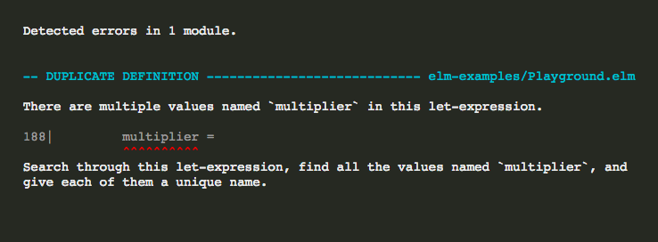
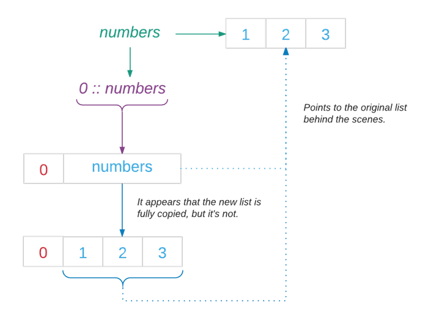
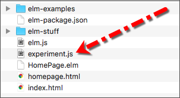
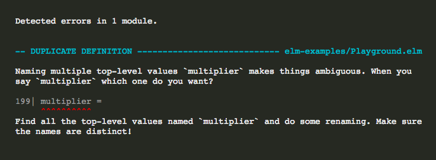
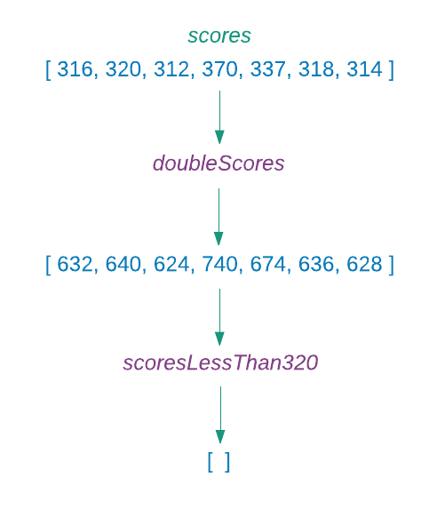
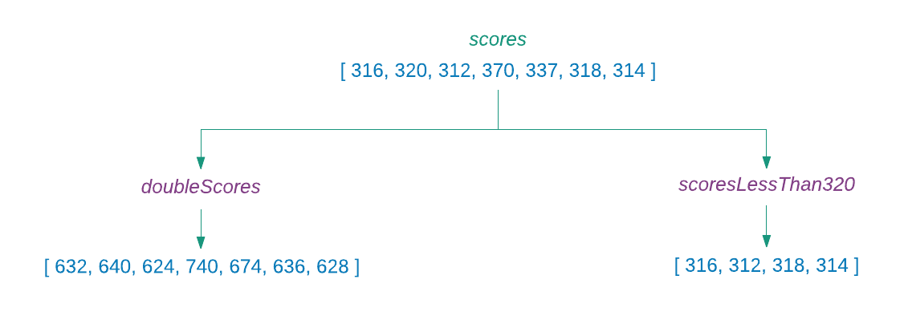

V sekci Value jsme si řekli, že hodnota v Elmu je cokoliv, co může být vytvořeno jako výsledek výpočtu. Také jsme si řekli, že hodnoty Elmu jsou neměnitelné, což znamená že je nelze po vytvoření změnit. Opět, Elm si opět tento koncept vypůjčil z matematiky. Na příklad, číslo 3 v matematice je hodnota, kterou nelze změnit. Zajisté, můžeme k němu přičíst či od něj odečíst jiná čísla ale číslo 3 samotné se nikdy nezmění. Přičteme-li 1 ke 3, dostaneme 4 - úplně nové číslo. To je přesně totéž, k čemu dojde, když se pokusíme změnit hodnotu (třeba seznam) v Elmu.
Neměnitelné konstanty
Všechny konstanty v Elmu jsou neměnitelné. Jednou přiřazená hodnota nemůže být změněna na jinou hodnotu (ve stejném lexikálním prostoru, zvaném scope). Přicházíte-li z imperativního jazyka, může to být pro vás matoucí. V oněch jazycích je obvyklé psát kód takto:
var x = 1;
x = x + 1;Proměnné x přiřazujeme hodnotu 1. Potom téže proměnné přiřazujeme součet původní hodnoty x a čísla 1, čímž měníme hodnotu x. Zkusme si totéž v Elmu.
> x = 1
1
> x = x + 1
-------------------------- BAD RECURSION -----------------------------
`x` is defined directly in terms of itself, causing an infinite loop.
5| x = x + 1
^
Maybe you are trying to mutate a variable? Elm does not have mutation,
so when I see `x` defined in terms of `x`, I treat it as a recursive
definition. Try giving the new value a new name!
Maybe you DO want a recursive value? To define `x` we need to know what
`x` is, so let’s expand it. Wait, but now we need to know what `x` is,
so let’s expand it... This will keep going infinitely!Jako obvykle, Elm poskytuje popisné chybové hlášení s poukazem na to, že neumožňuje mutaci hodnot. Definice jako x = x + 1 jsou nepřípustné jak v algebře, tak v Elmu, protože jsme již definovali x jako 1 a nyní říkáme, že x je 2. Obojí nemůže současně být pravda.
Věnujeme-li pozornost chybové zprávě, Elm se nám vlastně zkouší sdělit, proč v tomto případě nemůže připustit mutaci. Když se pokoušíme vyhodnoti výraz jako x = x + 1, vpodstatě žádáme Elm aby vytvořil konstantu jménem x, která je definována sama sebou, vytvářejíc tak nekonečnou smyčku. Tato smyčka může mít toto rozvedení:
- Recursive definition
x = x + 1
x = (x + 1) + 1
x = ((x + 1) + 1) + 1
x = (((x + 1) + 1) + 1) + 1
x = ((((x + 1) + 1) + 1) + 1) + 1
...
Elm nám také říká, že můžeme zápis opravit přiřazením výrazu x + 1 k novému jménu:
> x = 1
1
> xPlusOne = x + 1
2V imperativním jazyce je x příhodně označováno jako proměnná (variable), protože se její hodnota může měnit i po její deklaraci. Naproti tomu v Elmu jex konstantou. Protože Elm nepřipouští mutace, nemá tento jazyk žádné proměnné. Znamená to, že nemůžeme použít totéž jméno pro prezentaci jiné hodnoty někde jinde v kódu? Ne tak docela. Konstantě stejného jména nelze přiřadit jinou hodnotu pouze ve stejné lexikální části kódu, zvané scope.
- Scope
- Scope je oblast programu, ve které definované konstanty existují a jsou dostupné. Konstaty vytvořené v této oblasti nejsou přístupné z místa mimo oblast. Jakmile provádění programu opustí tuto oblast, jsou všechny její konstanty a hodnoty zničeny.
Konstanty jako x jsou lokální ve své oblasti, takže jejich životnost je obvykle krátká. Když jejich oblast již není aktuální, jsou zničeny. Jméno konstanty lze použít pro prezentaci jiné hodnoty. Definice funkce, zobrazená níže, je dobrou ukázkou konstanty v omezené oblasti (scope).
Zkopírujte si ji hned nad main v souboru Playground.elm.
multiplyByFive number =
let
multiplier =
5
in
number * multiplier
main =
...Nyní aplikujte funkci multiplyByFive v main.
main =
multiplyByFive 3
|> toString
|> Html.textNemáte-li elm-reactor již spuštěný, spusťte jej z adresáře beginning-elm v terminálu. Poté ve svém prohlížeči přejděte na stránku http://localhost:8000/elm-examples/Playground.elm a mělo by se na obrazovce objevit číslo 15.
Jak jsme se dozvěděli v sekci Let Expression, je výraz let jedním ze způsobů vytvoření lokálního scopu v Elmu. Konstanta multiplier ve funkci multiplyByFive je vázána k číslu 5. Dokud provádění programu neopustí prostor výrazu let, je konstanta multiplier stále aktivní. Pokusíme-li se o změnu hodnoty novým přiřazením uvnitř let, bude si Elm stěžovat. Nahraďte definici funkce multiplyByFive v souboru Playground.elm následujícím kódem.
multiplyByFive number =
let
multiplier =
5
multiplier =
6
in
number * multiplierObnovíte-li stránku na http://localhost:8000/elm-examples/Playground.elm, měli byste vidět následující chybovou zprávu.

Pokud však druhou definici konstanty multiplier přemístíme mimo funkci multiplyByFive, Elm již více neprotestuje, neboť konstanta je nyní definovaná v jiné oblasti, mimo oblast výrazu let.
multiplier =
6
multiplyByFive number =
let
multiplier =
5
in
number * multiplierObnovíte-li stránku na http://localhost:8000/elm-examples/Playground.elm, chybová zpráva my měla zmizet a měli byste opět vidět 15. Odeberte z kódu deklaraci multiplier = 6. Nyní si totéž vyzkoušíme v replu.
> multiplier = 5
5
> multiplier = 6
6Hmm, proč nám repl dovoluje přiřadit odlišnou hodnotu konstantě multiplier? Je to proto, že repl pracuje poněkud odlišně. Kdykoli přiřadíme jinou hodnotu k existující konstantě, repl vpodstatě přepojí konstantu na jinou hodnotu. Přepojovací (rebinding) proces zničí konstantu a vrátí ji k životu, jakoby konstanta nikdy předtím na jinou hodnotu neukazovala. Bez tohoto přepojovacího procesu by bylo obtížné, zkoušet si věci v replu.
Neměnitelné kolekce
V sekci Úprava entic, když jsme se snažili pochopit, proč nemůžeme měnit entice, jsme objevili, že všechny kolekce Elmu jsou rovněž neměnitelné. Protože je těžké, vytvářet něco užitečného, pokud nemůžeme transformovat data z jedné formy do druhé, používá Elm chytrou techniku, která nám poskytuje zdání, že přidáváme či odebíráme hodnoty z kolekce.
> numbers = [ 1, 2, 3 ]
[1,2,3]
> 0 :: numbers
[0, 1, 2, 3]
> List.drop 1 numbers
[2,3]V právě uvedeném příkladu jsme použili operátor :: pro přidání 0 na začátek seznamu numbers a funkci drop pro odebrání prvního elementu z téhož seznamu. I když jsme byli schopni přidat a vypustit hodnoty ze seznamu, jeho původní obsah se nezměnil:
> numbers
[1,2,3]Elm vytvořil kopii původního seznamu, přidal k ní 0 a vrátil jako výsledek. Zatímco se toto odehrávalo, zůstal původní seznam nezměněný.
“V čistě funkcionálním programu se hodnota proměnné nikdy nemění a přesto se mění neustále! Paradox!” - Joel Spolsky
Výkonostní implikace meněnitelnosti
Vytváření nové kopie dat pokaždé, když je aktualizujeme, se zdá byt nákladnou operací z hlediska výkonu. To je oprávněná starost. Ovšem, Elm je chytrý a ví, že existující data jsou neměnitelná. Takže je opětovně používá částečně nebo vcelku pokaždé, když vytváří nová data. V důsledku toho nezpůsobuje neměnitelnost v Elmu žádnou výkonostní zátěž. Takto vypadá interní schema tvorby nového seznamu z příkladu nahoře:

Výhody neměnitelnosti
Hovořili jsme dost o neměnitelnosti konstant a hodnot v Elmu - ale jaké z toho máme výhody? Primární výhodou neměnitelnosti je to, že nám dovoluje psát programy, které se chovají podle našeho očekávání. To vede k vysoce "udržovatelnému" kódu. Abychom byli konkretní, porovnejme impementaci v Elmu s jiným jazykem, například s JavaScriptem, který nemá neměnitelnost jako řídící princip.
V sekci Třídění seznamu jsme se naučili třídit seznam, obsahující sedm historicky nejlepších výsledků (zobrazených níže) šampionátů NBA v různém uspořádání.
[ 316, 320, 312, 370, 337, 318, 314 ]Řekněme, že se NBA rozhodla povolit nový přípravek s potenciálem až dvojnásobně zvýšit úspěšnost všech hráčů. To ztíží porovnávání současných hráčů s již nehrajícími hráči. Musíme tedy upravit všechny historické statistiky. Napišme funkci, která to zvládne. Nejprve ji napíšeme v JavaScriptu - v jazyce, který připouští mutaci - abychom zjistili, co se může pošpatnit.
Nestrachujte se, že jste dosud nikdy JavaScript nepoužíval. Následující příklad je docela jednoduchý a budete schopni je bez obtíží s porozuměním sledovat.
Vytvořte nový soubor experiment.js v kořenovém adresáři beginning-elm.

Nyní do něj vložte tento kód.
var multiplier = 2;
var scores = [316, 320, 312, 370, 337, 318, 314];
function doubleScores(scores) {
for (var i = 0; i < scores.length; i++) {
scores[i] = scores[i] * multiplier;
}
return scores;
}scores - Proměnná, která ukazuje na seznam nejvyšších výsledků.
multiplier - Proměnná, která ukazuje na číslo, které bude použito pro násobení každého elementu v seznamu scores list.
doubleScores - Funkce, která přijímá seznam výsledků, iteruje jím pomocí smyčky for, přičemž každý element násobí hodnotou proměnné multiplier.
Next, load experiment.js in index.html located in the root project directory beginning-elm like this:
<!DOCTYPE html>
<html>
.
.
<body>
.
.
<script src="elm.js"></script>
<script src="experiment.js"></script>
.
.
</body>
</html>Jak zmíněno v sekci Kompilátor Elmu, je perfektně možné použit kód Elmu a JavaScriptu vedle sebe.
Otevřte sooubor index.html v prohlížeči a v téže stránkce otevřte "konzolu prohlížeče".
- Otevření konzoly prohlížeče
- Instrukce pro otevření této konzoly závisí na používaném prohlížeči. Přečtěte si prosím tento pěkný tutoriál od WickedlySmart, který popisuje otevření konzoly v různých prohlížečích v různých OS.
Ověřte, zda je kód z experiment.js úspěšně načten vyvoláním těchto hodnot v konzoli.
> scores
[316, 320, 312, 370, 337, 318, 314]
> multiplier
2Podívejme se na funkci doubleScores v akci. Aplikujte ji takto v konzole:
> doubleScores(scores)
[632, 640, 624, 740, 674, 636, 628]Zatím vypadá vše dobře. Pojďme dál a předefinujme proměnnou multiplier v souboru experiment.js, tak že ukazuje na hodnotu 3.
var multiplier = 2;
var scores = [316, 320, 312, 370, 337, 318, 314];
var multiplier = 3;
function doubleScores(scores) {
for (var i = 0; i < scores.length; i++) {
scores[i] = scores[i] * multiplier;
}
return scores;
}Všimněte si, že původní definice var multiplier = 2; zůstává na místě. Nyní obnovte (reload) stránku index.html v prohlížeči aby se naše změny v souboru experiment.js mohly projevit. Potom aplikujte funkci doubleScores na seznam scores zápisem následujícího kódu do konzoly prohížeče.
> scores
[316, 320, 312, 370, 337, 318, 314]
> doubleScores(scores)
[948, 960, 936, 1110, 1011, 954, 942]Funkce doubleScores nyní ztrojnásobí hodnotu každého elementu v seznamu scores, což je problematické. Nové chování se neshoduje se jménem funkce. My chceme aby funkce pouze zdvojnásobila výsledky, bez ohledu na cokoli.
Žel, většina jazyků, které umožňují mutaci, trpí tímto problémem. Je zejména frustrující, když k redefinici dojde v odlehlé části kódu, což je obtížné detekovat. V našem příkladě snadno vidíme, že je proměnná multiplier redefinována, protože je blízko původní definice. V reálném světě má většína problémů, způsobených mutací, tendenci se projevit až po distribuci do produkčního prostředí.
Jak se s takovouto situací vyrovnává Elm? Abychom to zjistili, implementujme výše uvedený kód do Elmu. Přidejte následující kód hned nad main v souboru Playground.elm.
multiplier =
2
scores =
[ 316, 320, 312, 370, 337, 318, 314 ]
multiplier =
3
doubleScores scores =
List.map (\x -> x * multiplier) scoresObnovíte-li stránku na http://localhost:8000/elm-examples/Playground.elm, měli byste vidět následující chybovou zprávu.

Je to stejná chyba, jakou jsme dostali v odstavci Neměnitelné konstanty výše. Elm nám nedovolí předefinovat konstantu multiplier v téže oblasti (scope). Pokračujte a odeberte redefinici multiplier = 3.
Kód v JavaScript nahoře má další problém: mění původní seznam scores.
> scores
[316, 320, 312, 370, 337, 318, 314]
> doubleScores(scores)
[632, 640, 624, 740, 674, 636, 628]
> scores
[632, 640, 624, 740, 674, 636, 628]Jak vidno, hodnoty uvnitř seznamu scores se změnily. To je také problematické. Abychom pochopili proč, odeberme redefinici var multiplier = 3 ze soubooru experiment.js a přidejme dvě nové funkce pod funkci doubleScores takto:
var multiplier = 2;
var scores = [316, 320, 312, 370, 337, 318, 314];
function doubleScores(scores) {
for (var i = 0; i < scores.length; i++) {
scores[i] = scores[i] * multiplier;
}
return scores;
}
function scoresLessThan320(scores) {
return scores.filter(isLessThan320);
}
function isLessThan320(score) {
return score < 320;
}Jak jméno napovídá, funkce scoresLessThan320 vrací všechny výsledky, které jsou menší než 320. Prověřování, zda je výsledek menší nebo větší než 320, deleguje funkce scoresLessThan320 na funkci isLessThan320. Obnovte index.html v prohlížeči aby byl načten nový kód v souboru experiment.js. Poté aplikujte funkci scoresLessThan320 v konzole prohlížece takto:
> scores
[316, 320, 312, 370, 337, 318, 314]
> scoresLessThan320(scores)
[316, 312, 318, 314]Funkce scoresLessThan320 vrací výsledek podle očekávání. Co se ale stane, když aplikujeme funkci doubleScores před funkcí scoresLessThan320? Abychom to zjistili, obnovte znovu stránku index.html v prohlížeči, abychom vyprázdnili konzolu prohlížeče. Poté v ní aplikujte níže uvedené funkce.
> scores
[316, 320, 312, 370, 337, 318, 314]
> doubleScores(scores)
[632, 640, 624, 740, 674, 636, 628]
> scoresLessThan320(scores)
[]Funkce scoresLessThan320 hlásí, že neexistují výsledky menší než 320, což není správné. Je to proto, že funkce doubleScores
zdvojila hodnoty a uložila je zpět do původního seznamu, který jsme posléze zadali funkci scoresLessThan320, aniž bychom si význam této změny uvědomili.

Co jsme vlastně zamýšleli vyjadřuje toto:

Lze se tomuto problému v JavaScriptu vyhnout? Zajisté. Nahraďte stávající znění funkce doubleScores tímto:
function doubleScores(scores) {
var newScores = [];
for (var i = 0; i < scores.length; i++) {
newScores[i] = scores[i] * multiplier;
}
return newScores;
}Funkce doubleScores již existující seznam nemění. Místo toho vždy vrací nový seznam.
Obnovte stránku index.html a v konzole prohlížeče aplikujte funkce doubleScores a scoresLessThan320 ve stejném pořadí jako předtím.
> scores
[316, 320, 312, 370, 337, 318, 314]
> doubleScores(scores)
[632, 640, 624, 740, 674, 636, 628]
> scoresLessThan320(scores)
[316, 312, 318, 314]Nyní to chodí dle očekávání. Vyzkoušejme to v Elmu abychom viděli zda dostaneme rozdílné výsledky v závislosti na pořadí, ve kterém aplikujeme funkci scoresLessThan320. Přidejte následující definice funkcí hned nad main v souboruPlayground.elm
scoresLessThan320 scores =
List.filter isLessThan320 scores
isLessThan320 score =
score < 320
main =
...Abychom řádně porovnali výsledky experimentů, které jsme provedli s kódem JavaScript v konzole prohlížeče s kódem Elmu, potřebujeme načíst kód ze souboru Playground.elm do elm-repl. Aktuálně vyhledává Elm moduly jenom v adresáři beginning-elm, protože jsme v souboru elm-package.json určili "." jako jediný zdrojový adresář. Označení "." znamená, že soubor elm-package.json sám se aktuálně nachází v adresáři beginning-elm. Aby elm-repl nalezl soubor Playground.elm, potřebujeme do seznamu přidat rovněž adresářelm-examples.
{
.
.
"source-directories": [
".",
"elm-examples"
],
.
.
}Nezapomeňte přidat čárku za ".". V replu načtěte modul Playground module.
> import Playground exposing (scores, doubleScores, scoresLessThan320)Ze souboru Playground.elm jsme imprtovali scores, doubleScores a scoresLessThan320, takže je při použití nemusíme doplňovat prefixem s názvem modulu. Bez prefixů bude naše porovnávání kódů přehlednější. Jak bylo zmíněno v sekci Strings, dejte si pozor abyste se při importu objektů z externích modulů nedostali do kolize jmen. Nyní aplikujme scoresLessThan320 před doubleScores a uvidíme, co dostaneme.
> scores
[316,320,312,370,337,318,314]
> scoresLessThan320 scores
[316,312,318,314]
> doubleScores scores
[632,640,624,740,674,636,628]Dostali jsme, co jsme očekávali. Nyní aplikujme v replu scoresLessThan320 až po doubleScores.
> scores
[316,320,312,370,337,318,314]
> doubleScores scores
[632,640,624,740,674,636,628]
> scoresLessThan320 scores
[316,312,318,314]Opět jsme dostali, co jsme očekávali. V Elmu nemusíme implementovat funkci scoresLessThan320 specielním způsobem, aby se chovala konzistentně.
I když jsme byli schopni vyřešit problém s mutací v JavaScriptu explicitním návratem nového seznamu, musíme si být vědomi skutečnosti, že neměnitelnost není integrální součástí JavaScriptu. Což nás má nutit ke zvýšené obezřetnosti. To se stává únavné při obsáhlejším kódu v JS. V Elmu ovšem vrací funkce List.map (a všechny ostatní funkce v modulu List) nový seznam automaticky. Neměnitelnost jako nedílná součást jazyka nás kompletně zbavuje podobných problémů.